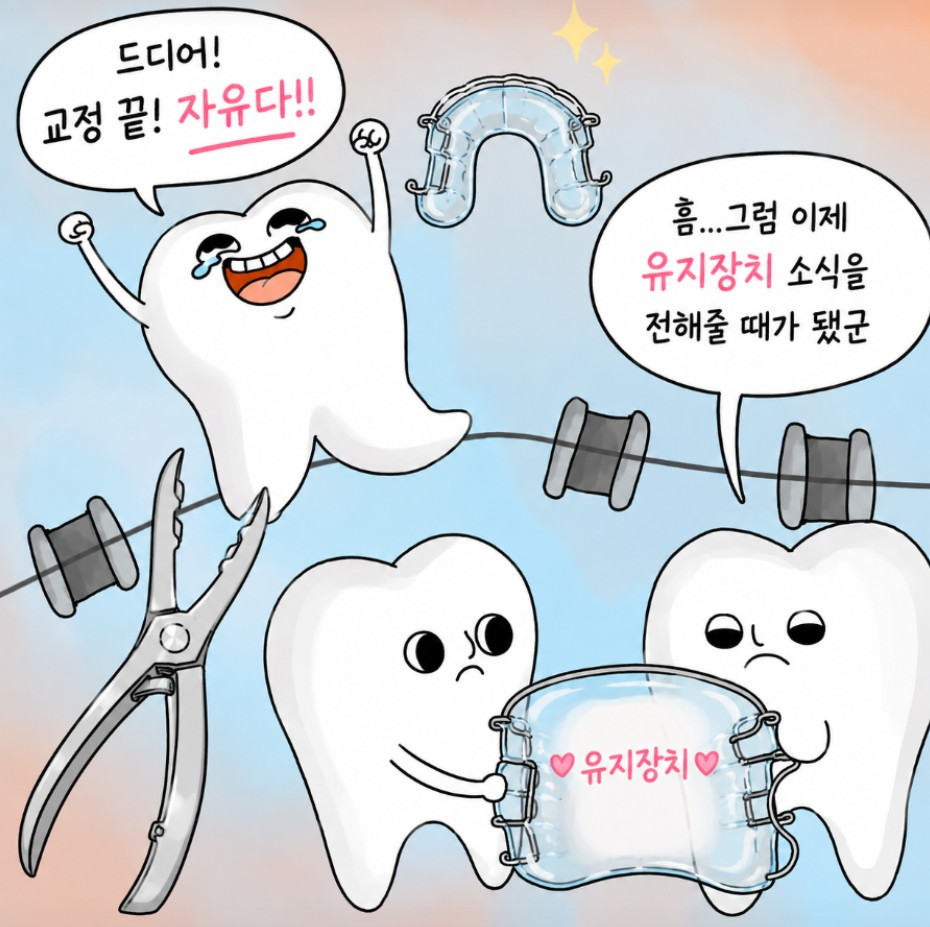
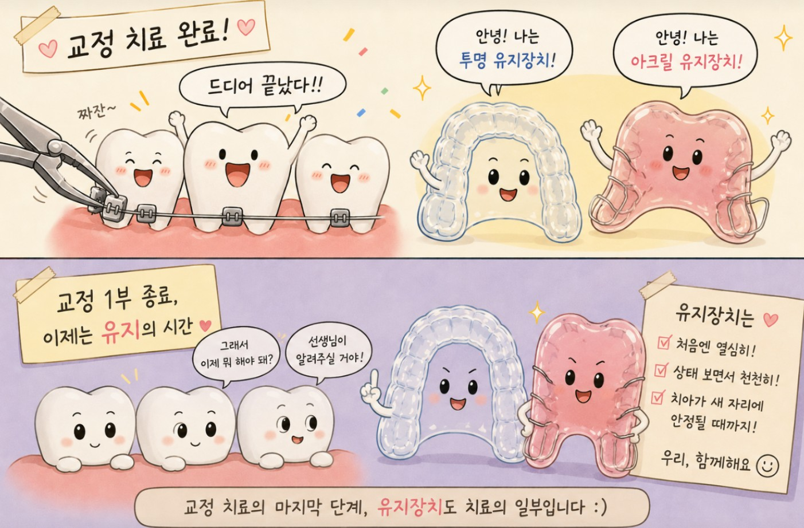

안녕하세요 교정과 전문의 손창한입니다 :)
오늘은 교정 치료를 마치고 체크업 중인 환자분들을 많이 보아 관련된 내용을 포스팅하고자 합니다.
(비가 많이 오는 날임에도 불구하고 꾸준히 체크하러 와주신 환자분들 최고!)
교정 치료가 끝나고 나서 가장 많이 받는 질문 NO.1 은 단연코 이겁니다.

결론부터 말씀드리면, 유지장치 착용 프로토콜은 나라마다, 병원마다, 또 의사마다 조금씩 다릅니다.
한 마디로 정답이라고 정해진 게 없어요!
그래서 오늘은 제가 서울대학교 치과병원 교정과에서 안석준 지도교수님에게 수련받으며 익힌 방식을 바탕으로 설명드리겠습니다.
교정 치료로 치아를 원하는 위치로 이동시켰다고 해서 그 자리가 영구적으로 고정되는 것은 아닙니다. 치아는 치주인대(periodontal ligament, PDL) 및 여러 종류의 탄성 섬유(elastic fibers) 들에 의해 원래 자리로 돌아가려는 성질이 있거든요. 이걸 '재발(relapse)'이라고 합니다.
유지장치는 이러한 재발을 막기 위해 치아가 새로운 위치에 안정적으로 자리잡을 때까지 잡아주는 역할을 합니다. 이 중 가철식 유지장치란 탈착이 가능한(=가철식, Removable) 플라스틱 장치입니다.
여기서 핵심은 장치 착용 시간 양호하고, 재발 양상 없다면이라는 조건일텐데요. 저는 체크업 약속 때 환자분의 유지장치를 직접 제가 끼고 빼보면서 느껴지는 감각도 중요하게 생각합니다.
만약 장치가 뻑뻑하고 잘 안 들어간다면?
장치 착용 시간이 부족했고, 치아가 조금씩 움직이고 있다는 신호입니다. 따라서 아직은 착용 빈도를 줄일 때가 아닙니다.
반면 장치가 헐렁~하게 잘 들어간다면?
치아가 해당 위치에서 안정적으로 유지되고 있다는 신호입니다. 따라서 착용 빈도를 줄이는 것을 고려합니다.

진료를 하다보면 불편하다는 이유로, 까먹었다는 이유로 유지장치 착용을 소홀히 하시는 분들도 종종 보게 됩니다.
그 마음 십분 이해합니다 ㄲㄲ
그렇지만! 오랜 시간과 비용을 들인 교정 치료인 만큼, 그 결과가 안정적으로 유지될 수 있도록 치료 종료 후 최소 1년 만큼은 잘 착용해주시길 권해드립니다.
이상 교정과전문의 손창한이었습니다 :)